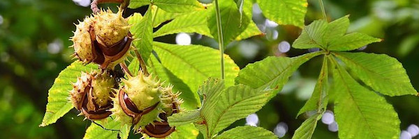

Les plantes dangereuses pour mon enfant (et pour moi)
Dès qu'ils en ont la possibilité, les bébés explorent le monde à leur façon : en touchant, en observant et surtout... en mettant tout ce qu'ils trouvent à la bouche. Vient alors le moment de sécuriser votre logement (si ce n'était déjà pas fait) afin de limiter tout accident domestique. Les produits ménagers, les médicaments et tout autre produit dangereux doivent être mis hors de portée, que ce soit en hauteur ou dans une armoire fermée à clef (pour avoir testé les bloques portes, nos enfants sont intelligents, ils finissent toujours par trouver un moyen de les ouvrir).
Mais qu'en est-il de nos belles plantes d'intérieur et d'extérieur ?
Beaucoup se révèlent dangeuseuses voire toxique. A vous donc, d'être attentifs et en cas de bébé gourmand, de contacter au plus vite le centre antipoisons, des médecins y assurent une permanence gratuite (hors coût de l'appel) 7 jours sur 7 et 24 heures sur 24. :
- Angers: 02.41.48.21.21
- Bordeaux: 05.56.96.40.80
- Lille: 08.00.59.59.59
- Lyon: 04.72.11.69.11
- Marseille: 04.91.75.25.25
- Nancy: 03.83.22.50.50
- Paris: 01.40.05.48.48
- Toulouse: 05.61.77.74.47
"Petit" tour d'horizon des plantes dangereuses
Marronier (aesculus hippocastanum)
Son fruit est souvent confondu avec les chataîgnes (qui elles, sont comestibles !) à cause d'appelations erronées telles que : marrons glacés, crème de marrons. Une ingestion de 1 ou 2 fruits peuvent provoquer des troubles digestifs, des nausées et des maux de ventre.
Anthure flamand rose (anthurium)
Elle contient dans toute la plante des cristaux d'oxalate de calcium qui agissent comme de fine petites aiguilles. Ces cristaux sont peu solubles. En cas d'ingestion une sensation de brûlure apparaît rapidement et peu durer plusieurs jours. Apparaîssent également une salivation abondante, une inflammation de la bouche, des maux de gorge, des douleurs abdominales, des vommissements et des diarrhées.